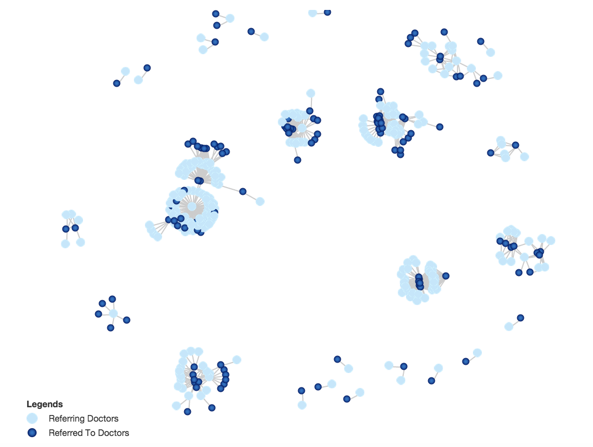

| Select City | |
||||||
| Select Referring Doctor | |
||||||
| Select Referred-To Doctor | |
|

Provider Network Visualizer

This network graph displays the referring relationships
between all providers specified in the search parameters.
You can drag the nodes and explore the connections.

Your search parameters did not return any network relationships. Try adjusting your search parameters.
| Legends | |
 |
Referring Doctors |
 |
Referred To Doctors |
Providers Ranked by "Influence"
We can identify the top most "important" or "influential"
doctors within the network by using metrics such as the
Engenvector Centrality or degree.